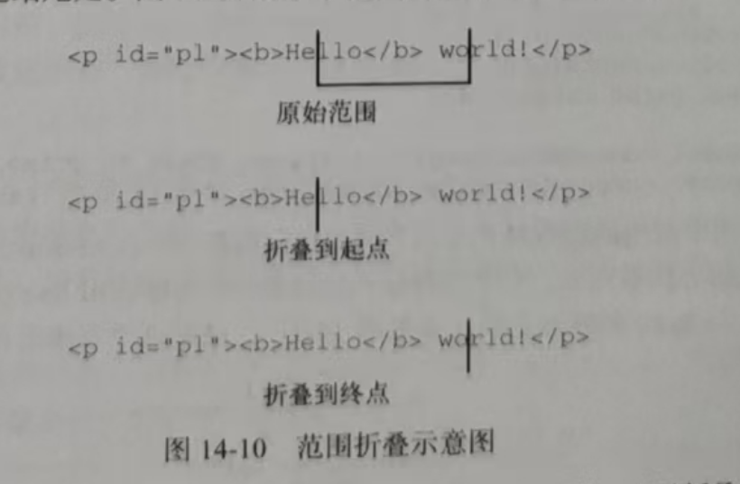

如果范围并没有选择文档的任何部分，则称为 折叠(collapsed)。折叠指的是当: 范围的起点和终点在同一个位置而且偏移量的起点和终点在同一个位置的时候 。那么他就是折叠 (至少豆包是这么说的 , 先信着吧 , 后面书本会验实的) 折叠范围有点类似文本框:如果文本框中有文本，那么可以用鼠标选中以高亮显示全部文本。这时候，如果再单击鼠标，则选区会被移除,光标会落在某两个字符中间。 而在折叠范围时，位置会被设置为范围与文档交界的地方，可能是范围选区的开始处，也可能是结尾处。
折叠范围可以使用collapse()方法,这个方法接收一个参数:布尔值,表示折叠到范围哪一端。true 表示折叠到起点，false表示折叠到终点。要确定范围是否已经被折叠,可以检测范围的collapsea 属性:
Hello world!
range.collapse(true) // 折叠到起点
console.log(range.collapsed) // 输出true
测试范围是否被折叠，能够帮助确定范围中的两个节点是否相邻。例如有以下HTML代码:
<p id="p1*>Paragraph l</p><p id=" p2">Paragraph 2</p>
Paragraph l
Paragraph 2
如果事先并不知道标记的结构(比如自动生成的标记)，则可以像下面这样创建一个范围:
let P1 = document.getElementById('P1'),
P2 = document.getElementById('P2'),
Range = document.createRange()
Range.setStartAfter(P1)
Range.setStartBefore(P2)
console.log(Range.collapse) // true
setStartAfter (后面) 和 setStartBefore (前面) 是快速设置 , 起点和终点 , 一个是设置在parameter , 前面 , 一个是设置parameter后面
在这种情况下，创建的范围是折叠的，因为p1后面和p2前面没有任何内容。